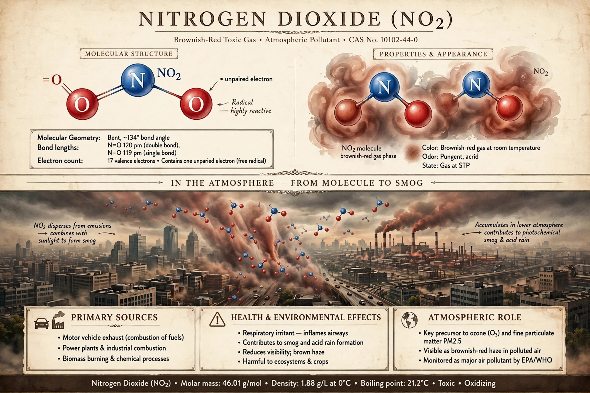

Nitrogen dioxide (NO2) is a chemical compound with the formula NO2. It is a reddish-brown, toxic gas with a pungent odour, one of several nitrogen oxides (NOx). It is an important air pollutant and intermediate in the industrial synthesis of nitric acid.

| Nitrogen dioxide | |
|---|---|
| Formula | NO2 |
| Molar mass | 46.006 g/mol |
| Appearance | Reddish-brown gas |
| Melting point | -9.3 °C |
| Boiling point | 21.15 °C |
NO2 is a bent molecule and a paramagnetic radical. It dimerises reversibly to colourless dinitrogen tetroxide (N2O4), favoured at low temperatures. It hydrolyses in water to nitric and nitrous acids, contributing to acid rain.
Industrially, NO2 is produced by oxidation of ammonia in the Ostwald process and oxidation of nitric oxide. In the environment it forms from combustion at high temperatures in engines and power plants, and from lightning.
Exposure irritates airways, aggravates asthma and increases susceptibility to respiratory infections. Long-term exposure is regulated by the WHO and national standards. NO2 contributes to photochemical smog and ozone formation. See Air pollution, Nitrogen fixation, Nitric acid.